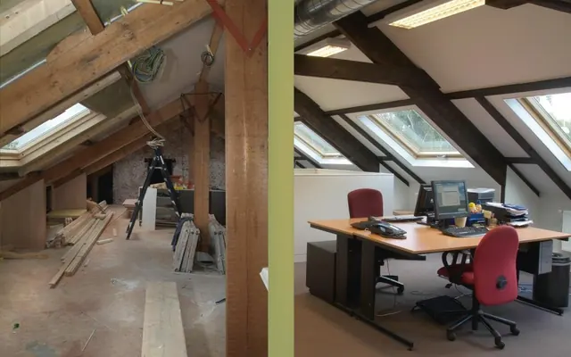
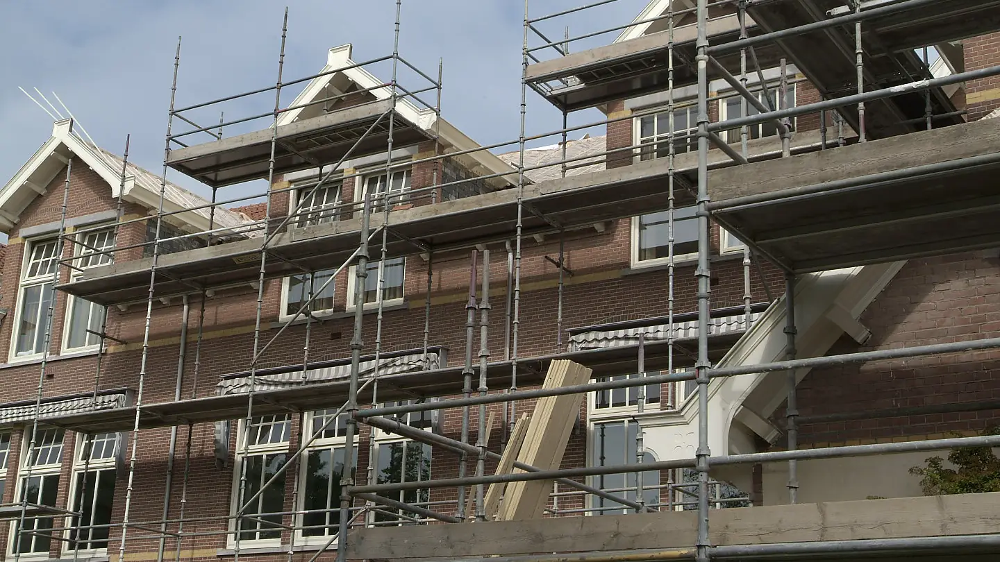
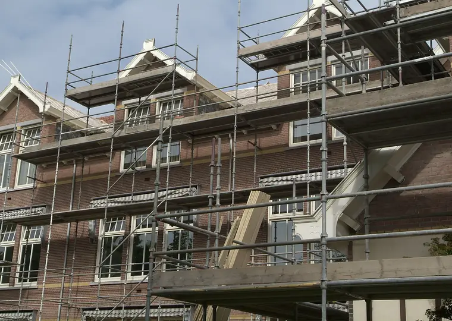
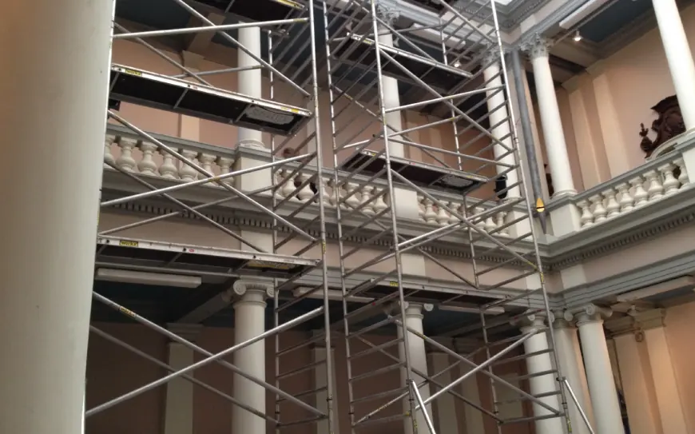
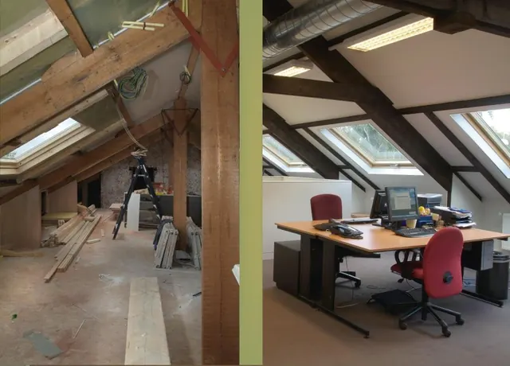
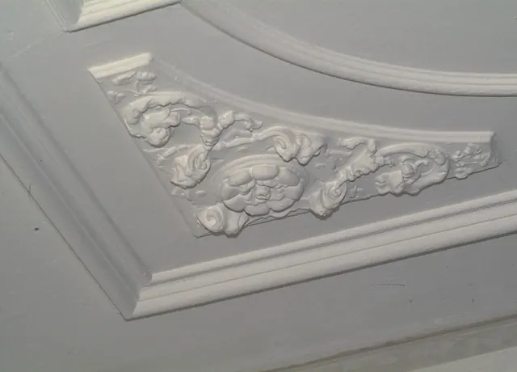
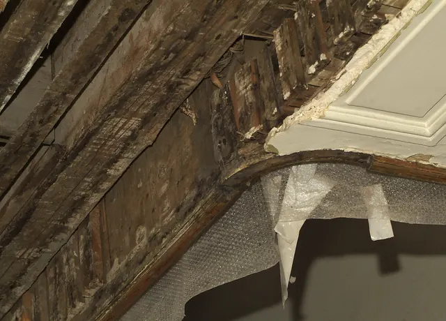
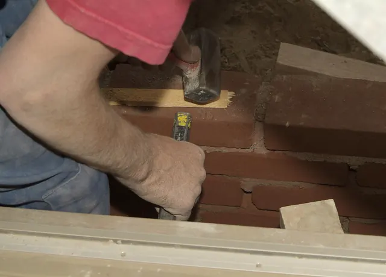

Renoveren en verbouwen
Renovatie en onderhoud, verbouw en herinrichting, timmerwerk en kozijnen.


Renovatie · Onderhoud · Verbouw · Houtrot · Interieurbouw · 24/7 service
Renovatie, onderhoud en verbouw van bestaande gebouwen, met eigen vakmensen. En gaat er iets mis, dan neemt de serviceafdeling dag en nacht op.
Zeer betrouwbaar aannemers bedrijf en vakkundig personeel topAlbert · Google · februari 2020 Bekijk Versteeg op Google →
Monumentale interieurs, kantoren, gevels en details: werk van de eigen vakmensen van Versteeg.





Voor overheid, onderwijs, vastgoedbeheerders en particulieren.

Renovatie en onderhoud, verbouw en herinrichting, timmerwerk en kozijnen.

Metselwerk, stucwerk en plafonds, houtrot, en interieurbouw uit de eigen timmerwerkplaats.
Alle diensten en de servicedienst
Vertel wat er moet gebeuren, Versteeg denkt mee. Spoed? Bel 030 280 80 50, dag en nacht.